SE-JEPA Self-Evolving Latent World Models
Adapts while planning and learns reusable predictors from deployment.
Simulation overview
-
Visual Shift
-
Shape Shift
-
Rope
-
Granular
Abstract
Latent world models can adapt during a single task, but those updates may be specific to the episode. SE-JEPA uses the trajectories collected during deployment to train reusable predictors across episodes. It groups experience by predictive compatibility, trains a slow predictor for each domain through replay, and validates each predictor before making it available for reuse. When conditions recur, feedback from the current episode determines which predictor to use for planning. We evaluate this approach under visual and shape shifts in pushing tasks and on deformable-object manipulation.
Qualitative Rollouts
See the goal, a baseline rollout, and the SE-JEPA rollout from the same start state in each environment.
Visual Shift
Shape Shift
Rope
Granular
Rollout comparison summary
Original appearance
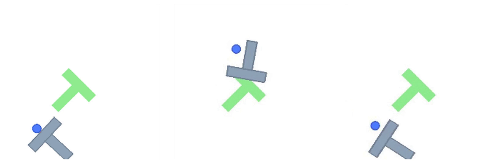
Red object
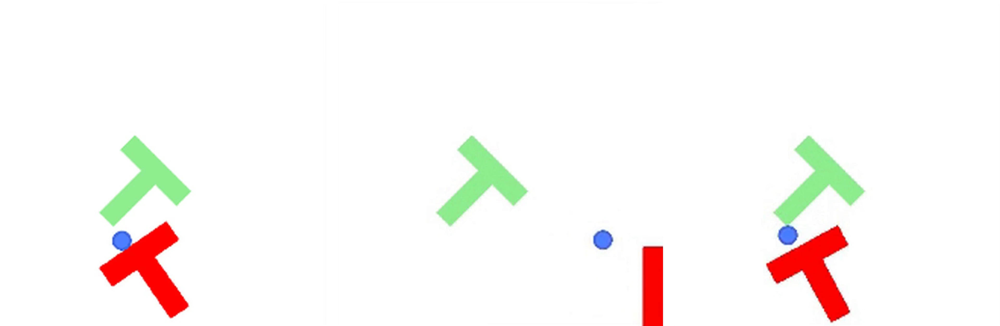
I shape
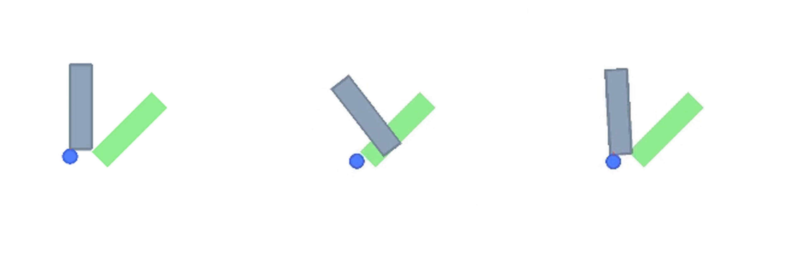
T shape
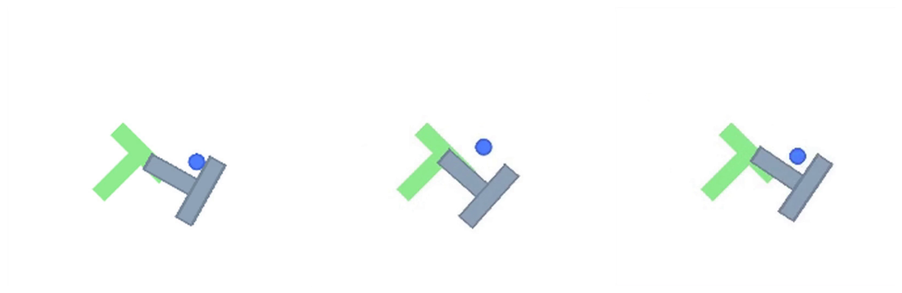
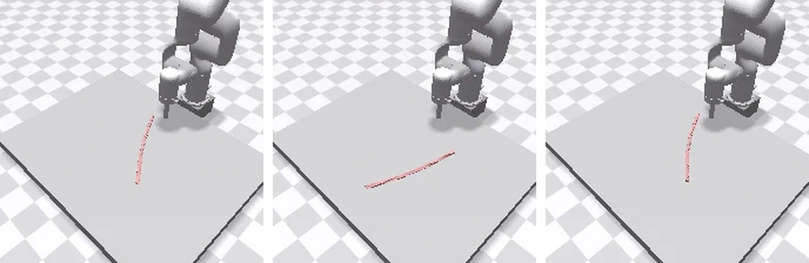
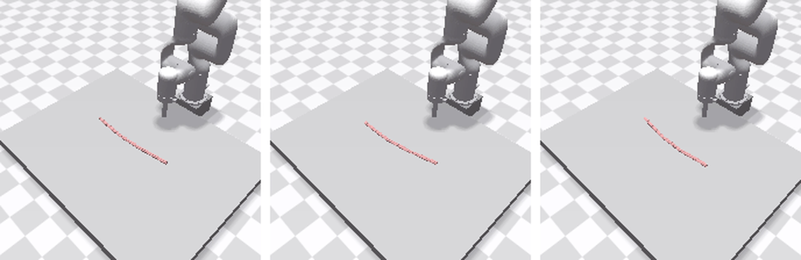
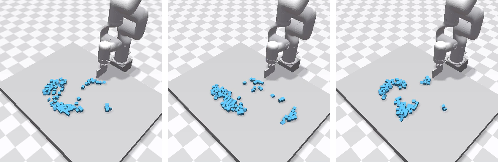
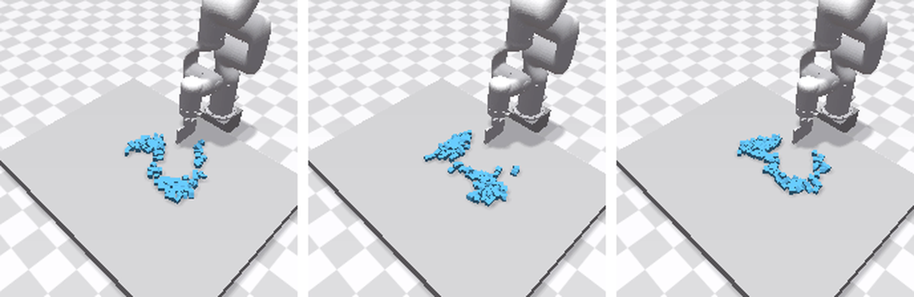
Approach

-
Predictor selection
The model evaluates the base predictor and eligible slow predictors on the same observed transitions in a fixed reference representation. Familiar episodes and episodes with no eligible alternative use the base predictor.
-
Fast adaptation
After executing a block of actions, the model uses the observed transitions to update the encoder projection and predictor adapters inside the current episode.
-
Experience consolidation
At the end of an episode, validated trajectories can enter an existing replay buffer or accumulate toward a new domain. Slow predictors train on replayed trajectories, and validation determines when they become eligible for selection.

Replay training. The slow predictor minimizes its next-embedding prediction error over the domain’s replay buffer. Here x is a short observation-and-action history, and z+ is the next observation embedding.
Trajectory validation. The candidate and the frozen base predictor use the same recorded actions. A lower error ratio means the candidate predicts the trajectory more accurately relative to the base.
Predictor retrieval. During the first three replans of an unfamiliar episode, the model chooses the base or eligible slow predictor with the lowest error on the transitions observed so far.
Planning with SE-JEPA
SE-JEPA encodes the current observation and goal, predicts the effects of candidate action sequences in latent space, and executes the first block of the selected sequence. It replans after observing the result. The benchmark below uses the cross-entropy method (CEM).
Planning Results
The benchmark covers seven object shapes, six visual shifts, and two robotic arm tasks. The unseen subset contains the I, square, and small T shapes. Color-3 covers the three recoloring conditions.
| Method | Shape Shift | Visual Shift | Rope | Granular | ||||
|---|---|---|---|---|---|---|---|---|
| All-7 (%) | Unseen (%) | Replans ↓ | All-6 (%) | Color-3 (%) | Replans ↓ | CD ↓ | CD ↓ | |
| DreamerV3 | 7.1 | 5.3 | 28.36 | 5.7 | 0.0 | 28.91 | 2.49 | 1.05 |
| IRIS | 2.9 | 2.7 | 29.37 | 6.0 | 6.7 | 28.85 | 1.11 | 0.37 |
| R3M | 18.9 | 18.0 | 25.49 | 21.7 | 27.3 | 25.00 | 1.13 | 0.95 |
| DINO CLS | 14.9 | 10.0 | 26.77 | 34.7 | 35.3 | 22.38 | 0.84 | 0.79 |
| DINO-WM | 62.0 | 46.0 | 16.15 | 33.0 | 37.3 | 22.05 | 0.491 | 0.301 |
| LeWM | 64.0 | 50.0 | 16.28 | 40.3 | 16.0 | 21.45 | 0.786 | 0.322 |
| DDP-WM | 57.7 | 43.3 | 17.59 | 52.7 | 57.3 | 18.39 | 0.677 | 0.259 |
| Frozen (pretrained) | 43.8 | 36.2 | 21.08 | 48.3 | 33.6 | 20.10 | 0.491 | 0.301 |
| AdaJEPA | 70.4 | 54.4 | 16.02 | 60.2 | 42.2 | 18.46 | 0.629 | 0.304 |
| SE-JEPA | 80.4 | 73.1 | 12.99 | 76.1 | 65.2 | 14.46 | 0.252 | 0.220 |
Unsuccessful episodes count as 30 replans. CD is final Chamfer distance to the goal. The SE-JEPA Shape Shift results come from the fifth online round.
Held-Out Planning
On goals excluded from learning, the paper evaluates SE-JEPA with memory writes disabled and retrieval and fast adaptation enabled. Success gains over AdaJEPA are 17.11 percentage points (GD) and 15.41 (CEM) on unseen shapes, and 18.74 (GD) and 15.89 (CEM) across six visual shifts.

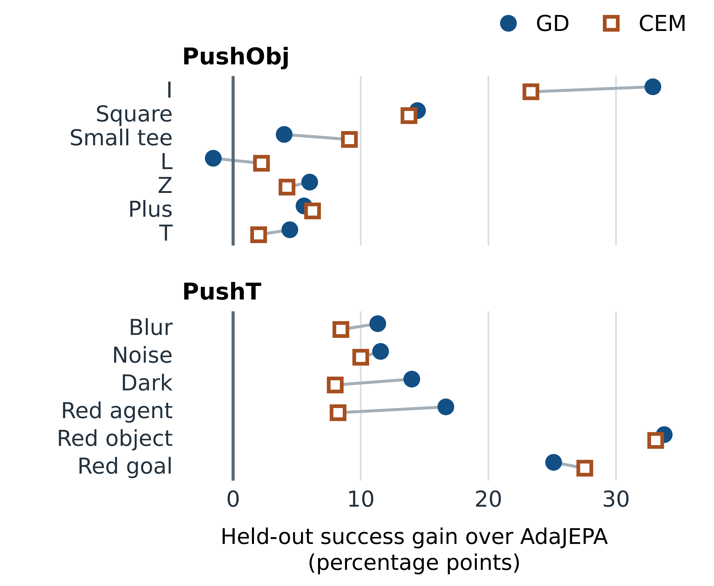
Evaluating Continual Learning
Averaged across GD and CEM, online success on 14 recurring shape and visual conditions rises from 65.3% to 75.5% over five deployment rounds. Shape-task success rises from 73.4% to 82.0%, and visual-task success from 57.2% to 68.9%.

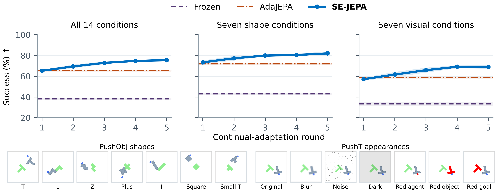
Mixed Rope and Granular Tasks
In a separate CEM experiment, tasks alternate between Rope and Granular with 50 new goals per material in each round. A shared rope-pretrained DINO-WM serves as the base model. Fast adaptation remains enabled.
Rope

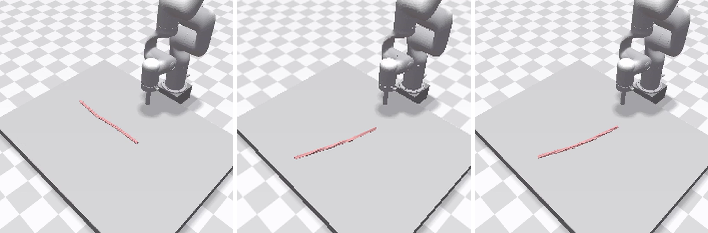
Granular

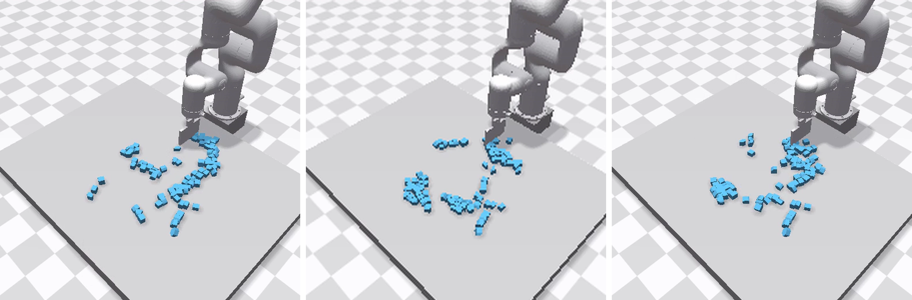
| Round | Rope CD ↓ | Granular CD ↓ | Purity (%) | Retrieval (%) |
|---|---|---|---|---|
| 1 | 0.598 | 0.471 | 100 | 96.6 |
| 2 | 0.452 | 0.369 | 100 | 100.0 |
| 3 | 0.412 | 0.355 | 100 | 100.0 |
BibTeX
@misc{lin2026sejepa,
title = {{SE-JEPA}: Self-Evolving Latent World Models},
author = {Lin, Chen and Tu, Yiyang and Zhou, Jiacheng and
Pu, Haotian and Li, Bin and Zhang, Longtai and
Fang, Shuangkang and Wang, Hongwei},
year = {2026},
note = {Preprint}
}